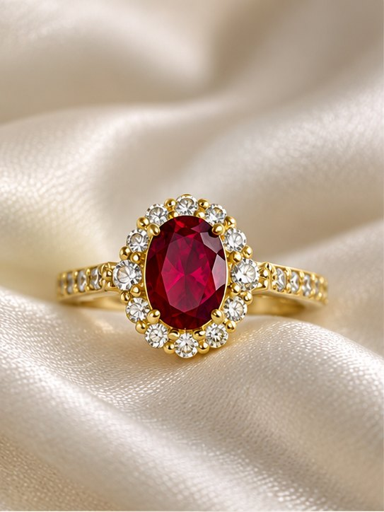
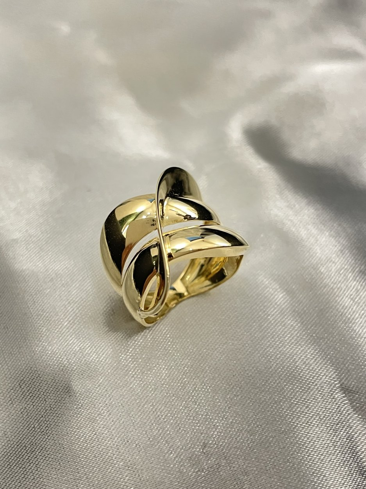
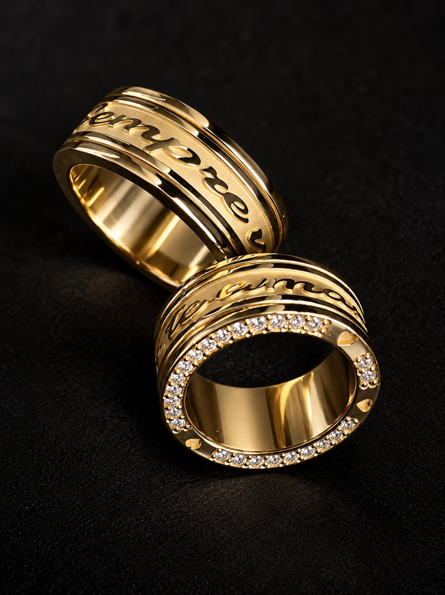
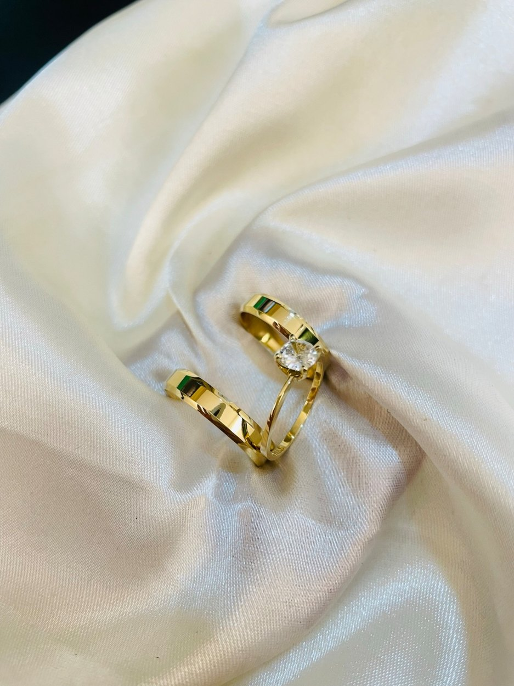
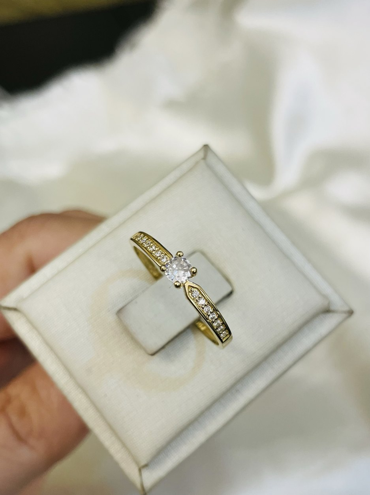
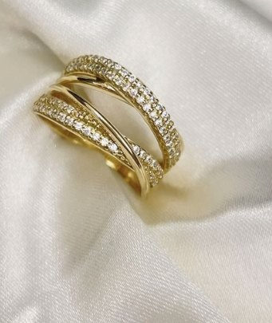

Anel com pedra vermelha
Conheça os detalhes desta criação e consulte as possibilidades de personalização.
Solicitar orçamento →Joias que traduzem histórias, sentimentos e momentos únicos. Criação artesanal com atenção a cada detalhe.
Explore algumas das possibilidades de criação. Cada projeto pode ser desenvolvido de forma personalizada.

Conheça os detalhes desta criação e consulte as possibilidades de personalização.
Solicitar orçamento →
Conheça os detalhes desta criação e consulte as possibilidades de personalização.
Solicitar orçamento →
Conheça os detalhes desta criação e consulte as possibilidades de personalização.
Solicitar orçamento →
Conheça os detalhes desta criação e consulte as possibilidades de personalização.
Solicitar orçamento →
Conheça os detalhes desta criação e consulte as possibilidades de personalização.
Solicitar orçamento →
Conheça os detalhes desta criação e consulte as possibilidades de personalização.
Solicitar orçamento →Da criação à manutenção, cuidado técnico em cada etapa.
Projetos exclusivos em ouro 18K e prata 925.
Recuperação de peças com avaliação individual.
Adequação de anéis e alianças, conforme a viabilidade da peça.
Renovação do brilho e dos detalhes da sua joia.
Personalização de mensagens, nomes e datas especiais.
Serviços de montagem e cravação conforme o projeto.
À frente da Francis Goldsmith está Francis, ourives com mais de uma década de experiência na criação, fabricação e recuperação de joias.
A marca une conhecimento artesanal, precisão técnica e atendimento próximo para desenvolver peças que carregam histórias e significado.
Converse com o ourivesConte sua ideia e solicite uma avaliação ou orçamento.
Falar pelo WhatsAppAtendimento online • Brasil